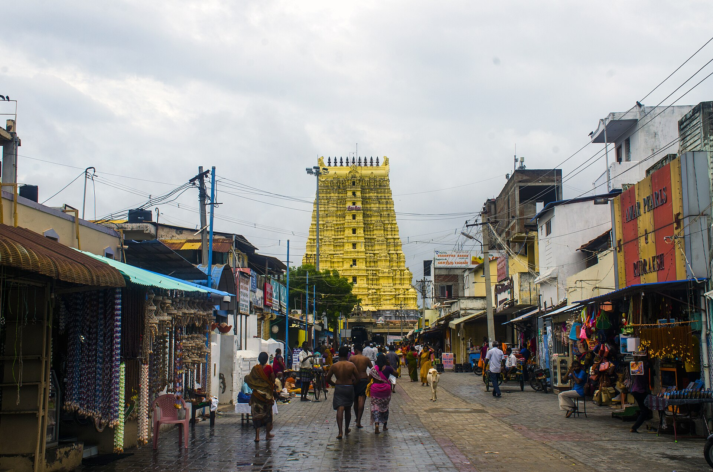

భారతదేశ ఆధ్యాత్మిక చైతన్యానికి మణిహారమైన పన్నెండు జ్యోతిర్లింగాలలో మరియు ఆదిశంకరాచార్యులు నిర్దేశించిన చతుర్ధామాలలో (బదరీనాథ్, పూరీ, ద్వారక, రామేశ్వరం) దక్షిణ ధామంగా వెలుగొందుతున్న పరమ పవిత్ర క్షేత్రం శ్రీ రామనాథస్వామి దేవాలయం (రామేశ్వరం).
ఈ దివ్యక్షేత్రం తమిళనాడు రాష్ట్రంలోని రామనాథపురం జిల్లా పరిధిలో, హిందూ మహాసముద్రం మరియు బంగాళాఖాతాల సంగమ తీరాన ఉన్న శంఖాకారపు పాంబన్ (రామేశ్వరం) ద్వీపంలో కొలువై ఉంది.
త్రేతాయుగంలో లంకాపతి అయిన రావణాసురుని సంహరించిన పిమ్మట, మర్యాదా పురుషోత్తముడైన శ్రీరామచంద్రుడు స్వయంగా పరమశివుడిని లింగరూపంలో ప్రతిష్ఠించి ఆరాధించిన మహా మహిమాన్విత స్థలం ఇదే. అందువల్లనే ఈ క్షేత్రం 'శైవ-వైష్ణవ సమ్మేళన క్షేత్రం'గా సమస్త భక్తకోటికి ముక్తిదాయకమై భాసిల్లుతోంది.
శ్రీ రామనాథస్వామి జ్యోతిర్లింగ క్షేత్రం
ద్వాదశ జ్యోతిర్లింగ దివ్య క్షేత్రం & చతుర్ధామ పుణ్యస్థలి • రామేశ్వరం, తమిళనాడు

౧. పరిచయం
౨. క్షేత్ర పురాణ గాథ — రామలింగం & విశ్వలింగ ఆవిర్భావం
రామాయణ యుద్ధ కాండ మరియు శివ పురాణ కోటిరుద్ర సంహిత ప్రకారం, లంకలో అధర్మపరుడైన రావణుడిని సంహరించి సీతాదేవిని తిరిగి పొందిన శ్రీరాముడు, రావణుడు బ్రాహ్మణ పుత్రుడు మరియు వేదవేదాంగ పారంగతుడు కావడం వలన ప్రాప్తించిన బ్రహ్మహత్యా పాతకం నివారణార్థం అగస్త్యాది మహర్షుల ఆదేశానుసారం ఈ సముద్రతీరంలో పరమశివుడిని ప్రతిష్ఠించాలని సంకల్పించాడు.
• హనుమంతుని కైలాస గమనం: సాక్షాత్తు కైలాసేశ్వరుని నుండి ఆత్మలింగాన్ని తీసుకురావడానికి శ్రీరాముడు వాయుపుత్రుడైన హనుమంతుడిని కైలాసానికి పంపించాడు.
• సైకత లింగం (రామలింగం): ముహూర్త సమయం సమీపిస్తున్నా హనుమంతుడు రాకపోవడంతో, ముహూర్తం దాటిపోకుండా ఉండేందుకు సీతాదేవి సముద్రపు ఇసుకతో అద్భుతమైన శివలింగాన్ని తీర్చిదిద్దింది. ఆ లింగానికే శ్రీరాముడు వేదమంత్రోచ్ఛారణల మధ్య ప్రాణప్రతిష్ఠ చేసి పూజించాడు. ఈ లింగమే శ్రీ రామనాథస్వామి (రామలింగం)గా ప్రసిద్ధి చెందింది.
• విశ్వలింగం (కాశీ లింగం) ప్రతిష్ఠ: ఇంతలో హనుమంతుడు కైలాసం నుండి రెండు దివ్య లింగాలతో తిరిగి వచ్చాడు. అప్పటికే ప్రతిష్ఠ ముగియడం చూసి హనుమంతుడు తీవ్ర విచారానికి లోనయ్యాడు. అది గమనించిన శ్రీరాముడు—"హనుమా! నీకు విచారము వద్దు. నీవు తెచ్చిన లింగాన్ని ప్రతిష్ఠించాలంటే ముందుగా ఇక్కడ ఉన్న ఇసుక లింగాన్ని తొలగించు" అని సెలవిచ్చాడు. హనుమంతుడు తన అపార బలంతో, తోకతో ఆ ఇసుక లింగాన్ని పెకలించడానికి ప్రయత్నించినా అది అంగుళం కూడా కదలలేదు. హనుమంతుని తోక ఒరిపిడి ఆనవాళ్ళు నేటికీ ఆ రామలింగంపై దర్శనమిస్తాయి.
హనుమంతుని భక్తికి మెచ్చిన శ్రీరాముడు ఆయన తెచ్చిన లింగాన్ని రామలింగానికి సమీపంలోనే ప్రతిష్ఠించి దానికి విశ్వలింగం (కాశీలింగం / హనుమద్లింగం) అని నామకరణం చేశాడు. అంతేకాక, "ఎవరైతే ముందుగా ఈ విశ్వలింగాన్ని దర్శించి పూజిస్తారో, వారికే నా రామలింగ దర్శన ఫలం దక్కుతుంది" అని వరమిచ్చాడు. ఆ సంప్రదాయం నేటికీ అక్షరాలా కొనసాగుతోంది.
• హనుమంతుని కైలాస గమనం: సాక్షాత్తు కైలాసేశ్వరుని నుండి ఆత్మలింగాన్ని తీసుకురావడానికి శ్రీరాముడు వాయుపుత్రుడైన హనుమంతుడిని కైలాసానికి పంపించాడు.
• సైకత లింగం (రామలింగం): ముహూర్త సమయం సమీపిస్తున్నా హనుమంతుడు రాకపోవడంతో, ముహూర్తం దాటిపోకుండా ఉండేందుకు సీతాదేవి సముద్రపు ఇసుకతో అద్భుతమైన శివలింగాన్ని తీర్చిదిద్దింది. ఆ లింగానికే శ్రీరాముడు వేదమంత్రోచ్ఛారణల మధ్య ప్రాణప్రతిష్ఠ చేసి పూజించాడు. ఈ లింగమే శ్రీ రామనాథస్వామి (రామలింగం)గా ప్రసిద్ధి చెందింది.
• విశ్వలింగం (కాశీ లింగం) ప్రతిష్ఠ: ఇంతలో హనుమంతుడు కైలాసం నుండి రెండు దివ్య లింగాలతో తిరిగి వచ్చాడు. అప్పటికే ప్రతిష్ఠ ముగియడం చూసి హనుమంతుడు తీవ్ర విచారానికి లోనయ్యాడు. అది గమనించిన శ్రీరాముడు—"హనుమా! నీకు విచారము వద్దు. నీవు తెచ్చిన లింగాన్ని ప్రతిష్ఠించాలంటే ముందుగా ఇక్కడ ఉన్న ఇసుక లింగాన్ని తొలగించు" అని సెలవిచ్చాడు. హనుమంతుడు తన అపార బలంతో, తోకతో ఆ ఇసుక లింగాన్ని పెకలించడానికి ప్రయత్నించినా అది అంగుళం కూడా కదలలేదు. హనుమంతుని తోక ఒరిపిడి ఆనవాళ్ళు నేటికీ ఆ రామలింగంపై దర్శనమిస్తాయి.
హనుమంతుని భక్తికి మెచ్చిన శ్రీరాముడు ఆయన తెచ్చిన లింగాన్ని రామలింగానికి సమీపంలోనే ప్రతిష్ఠించి దానికి విశ్వలింగం (కాశీలింగం / హనుమద్లింగం) అని నామకరణం చేశాడు. అంతేకాక, "ఎవరైతే ముందుగా ఈ విశ్వలింగాన్ని దర్శించి పూజిస్తారో, వారికే నా రామలింగ దర్శన ఫలం దక్కుతుంది" అని వరమిచ్చాడు. ఆ సంప్రదాయం నేటికీ అక్షరాలా కొనసాగుతోంది.
౩. క్షేత్ర ప్రాముఖ్యత & చతుర్ధామ వైభవం
ద్వాదశ జ్యోతిర్లింగ స్తోత్రంలో జగద్గురు ఆదిశంకరాచార్యులు:
"సుతామ్రపర్ణీజలరాశియోగే నిబధ్య సేతుం విశిఖైరసంఖ్యైః |
శ్రీరామచంద్రేణ సమర్పితం తం రామేశ్వరాఖ్యం నియతం నమామి ||"
అని కొనియాడారు.
• కాశీ - రామేశ్వర యాత్రా సంప్రదాయం: భారతీయ సనాతన సంప్రదాయంలో కాశీ యాత్ర, రామేశ్వర యాత్ర ఒకదానితో ఒకటి విడదీయరాని అనుబంధం కలిగి ఉన్నాయి. కాశీ (గంగానది) లేదా ప్రయాగ త్రివేణి సంగమం నుండి పవిత్ర గంగాజలాన్ని కావడి ద్వారా తెచ్చి రామేశ్వరంలో రామనాథస్వామికి అభిషేకం చేయడం, అలాగే రామేశ్వరం/ధనుష్కోడి సముద్ర ఇసుకను తీసుకువెళ్లి ప్రయాగ త్రివేణి సంగమంలో కలపడం అత్యున్నత పుణ్యప్రదమైన సంపూర్ణ యాత్రా విధిగా పరిగణించబడుతుంది.
• దక్షిణ చార్ ధామ్: ఉత్తరాన బదరీనాథ్, పశ్చిమాన ద్వారక, తూర్పున పూరీ జగన్నాథుని దర్శించిన భక్తులు దక్షిణాన రామేశ్వరాన్ని దర్శించినప్పుడే చతుర్ధామ యాత్ర సంపూర్ణమవుతుంది.
"సుతామ్రపర్ణీజలరాశియోగే నిబధ్య సేతుం విశిఖైరసంఖ్యైః |
శ్రీరామచంద్రేణ సమర్పితం తం రామేశ్వరాఖ్యం నియతం నమామి ||"
అని కొనియాడారు.
• కాశీ - రామేశ్వర యాత్రా సంప్రదాయం: భారతీయ సనాతన సంప్రదాయంలో కాశీ యాత్ర, రామేశ్వర యాత్ర ఒకదానితో ఒకటి విడదీయరాని అనుబంధం కలిగి ఉన్నాయి. కాశీ (గంగానది) లేదా ప్రయాగ త్రివేణి సంగమం నుండి పవిత్ర గంగాజలాన్ని కావడి ద్వారా తెచ్చి రామేశ్వరంలో రామనాథస్వామికి అభిషేకం చేయడం, అలాగే రామేశ్వరం/ధనుష్కోడి సముద్ర ఇసుకను తీసుకువెళ్లి ప్రయాగ త్రివేణి సంగమంలో కలపడం అత్యున్నత పుణ్యప్రదమైన సంపూర్ణ యాత్రా విధిగా పరిగణించబడుతుంది.
• దక్షిణ చార్ ధామ్: ఉత్తరాన బదరీనాథ్, పశ్చిమాన ద్వారక, తూర్పున పూరీ జగన్నాథుని దర్శించిన భక్తులు దక్షిణాన రామేశ్వరాన్ని దర్శించినప్పుడే చతుర్ధామ యాత్ర సంపూర్ణమవుతుంది.
౪. అద్భుత ద్రవిడ శిల్పకళ & ప్రపంచ ప్రసిద్ధ పొడవైన ప్రాకారాలు
రామనాథస్వామి ఆలయం దక్షిణ భారతీయ ద్రవిడ శిల్పకళా వైభవానికి పరమోన్నత శిఖరం. అనేక శతాబ్దాల పాటు చోళులు, పాండ్యులు, విజయనగర చక్రవర్తులు మరియు సేతుపతి రాజులు ఈ ఆలయాన్ని అద్భుతంగా నిర్మించారు:
• విశ్వవిఖ్యాత మూడవ ప్రాకారం (The Grand Corridor): ప్రపంచంలోని అన్ని ఆలయాలలోకెల్లా అత్యంత పొడవైన స్తంభాల ప్రాకారం ఇదే! తూర్పు-పడమరల మధ్య సుమారు 197 మీటర్లు, ఉత్తర-దక్షిణాల మధ్య సుమారు 133 మీటర్ల విస్తీర్ణంలో విస్తరించి ఉంది. ఈ ప్రాకారంలో దాదాపు ౧,౨౧౨ (1212) అద్భుతమైన గ్రానైట్ రాతి స్తంభాలు ఉన్నాయి. ఒక్కో స్తంభంపై చెక్కిన సూక్ష్మ కళాఖండాలు, సంపూర్ణ రేఖాగణిత సౌష్ఠవం చూపరులను అబ్బురపరుస్తాయి. 18వ శతాబ్దంలో రామనాథపురం మహారాజు ముత్తురామలింగ సేతుపతి ఈ అద్భుత ప్రాకారాన్ని నిర్మించారు.
• ఉన్నత రాజగోపురాలు: ఆలయానికి నాలుగు దిక్కులా గంభీరమైన గోపురాలు ఉన్నాయి. తూర్పు రాజగోపురం 9 అంతస్తులతో సుమారు 53 మీటర్ల (126 అడుగుల) ఎత్తుతో సముద్రం నుండి వచ్చే యాత్రికులకు సుదూరం నుంచే దర్శనమిస్తుంది.
• శ్రీ పర్వతవర్ధిని అమ్మవారి సన్నిధి: పరమశివుని దేవేరి అయిన పర్వతవర్ధిని (పార్వతీదేవి) అమ్మవారికి ఆలయ ప్రాంగణంలో విశాలమైన ప్రత్యేక గర్భాలయం ఉంది. ఇక్కడ అమ్మవారు లోకకల్యాణ స్వరూపిణిగా కొలువుదీరి భక్తుల కోర్కెలను ఈడేరుస్తుంది.
• విశ్వవిఖ్యాత మూడవ ప్రాకారం (The Grand Corridor): ప్రపంచంలోని అన్ని ఆలయాలలోకెల్లా అత్యంత పొడవైన స్తంభాల ప్రాకారం ఇదే! తూర్పు-పడమరల మధ్య సుమారు 197 మీటర్లు, ఉత్తర-దక్షిణాల మధ్య సుమారు 133 మీటర్ల విస్తీర్ణంలో విస్తరించి ఉంది. ఈ ప్రాకారంలో దాదాపు ౧,౨౧౨ (1212) అద్భుతమైన గ్రానైట్ రాతి స్తంభాలు ఉన్నాయి. ఒక్కో స్తంభంపై చెక్కిన సూక్ష్మ కళాఖండాలు, సంపూర్ణ రేఖాగణిత సౌష్ఠవం చూపరులను అబ్బురపరుస్తాయి. 18వ శతాబ్దంలో రామనాథపురం మహారాజు ముత్తురామలింగ సేతుపతి ఈ అద్భుత ప్రాకారాన్ని నిర్మించారు.
• ఉన్నత రాజగోపురాలు: ఆలయానికి నాలుగు దిక్కులా గంభీరమైన గోపురాలు ఉన్నాయి. తూర్పు రాజగోపురం 9 అంతస్తులతో సుమారు 53 మీటర్ల (126 అడుగుల) ఎత్తుతో సముద్రం నుండి వచ్చే యాత్రికులకు సుదూరం నుంచే దర్శనమిస్తుంది.
• శ్రీ పర్వతవర్ధిని అమ్మవారి సన్నిధి: పరమశివుని దేవేరి అయిన పర్వతవర్ధిని (పార్వతీదేవి) అమ్మవారికి ఆలయ ప్రాంగణంలో విశాలమైన ప్రత్యేక గర్భాలయం ఉంది. ఇక్కడ అమ్మవారు లోకకల్యాణ స్వరూపిణిగా కొలువుదీరి భక్తుల కోర్కెలను ఈడేరుస్తుంది.
౫. పవిత్ర ౨౨ తీర్థాలు & తీర్థస్నాన మహత్యం
రామేశ్వర దర్శనంలో అత్యంత ప్రధానమైన ఘట్టం తీర్థస్నానం. ఆలయ ప్రాంగణంలోనే మొత్తం ౨౨ పవిత్ర బావులు (తీర్థాలు) ఉన్నాయి. ఈ బావులలోని నీటి రుచి, లవణ సాంద్రత ఒకదానికొకటి పూర్తి భిన్నంగా ఉండటం ప్రకృతి వింతలలో ఒకటి:
• అగ్ని తీర్థం (సముద్ర స్నానం): ఆలయానికి తూర్పున ఉన్న సముద్రతీరాన్ని 'అగ్ని తీర్థం' అంటారు. సీతాదేవి అగ్నిప్రవేశం చేసిన పిమ్మట ఆమె పాతివ్రత్యానికి సాక్ష్యంగా నిలిచిన అగ్నిదేవుడు తన తాపాన్ని పోగొట్టుకోవడానికి ఈ సముద్రంలో మునిగి పవిత్రుడయ్యాడని పురాణాలు చెబుతాయి. భక్తులు ముందుగా ఇక్కడ సముద్రస్నానం చేసి, తడిబట్టలతో ఆలయంలోకి ప్రవేశిస్తారు.
• ఆలయ అంతర్గత ౨౨ తీర్థాలు:
౧. మహాలక్ష్మి తీర్థం • ౨. సావిత్రి తీర్థం • ౩. గాయత్రి తీర్థం • ౪. సరస్వతి తీర్థం • ౫. సేతుమాధవ తీర్థం • ౬. గంధమాధన తీర్థం • ౭. కవచ తీర్థం • ౮. గవయ తీర్థం • ౯. నల తీర్థం • ౧౦. నీల తీర్థం • ౧౧. శంఖ తీర్థం • ౧౨. చక్ర తీర్థం • ౧౩. బ్రహ్మహత్యా విమోచన తీర్థం • ౧౪. సూర్య తీర్థం • ౧౫. చంద్ర తీర్థం • ౧౬. గంగా తీర్థం • ౧౭. యమునా తీర్థం • ౧౮. గయా తీర్థం • ౧౯. శివ తీర్థం • ౨౦. సత్యామృత తీర్థం • ౨౧. సర్వ తీర్థం • ౨౨. కోటి తీర్థం.
చివరిదైన 'కోటి తీర్థం' శ్రీకృష్ణుని బాణంతో ఉద్భవించిందని, ఇందులో స్నానం లేదా ప్రోక్షణ వలన సమస్త జన్మల పాపాలు సమూలంగా నశిస్తాయని విశ్వాసం.
• అగ్ని తీర్థం (సముద్ర స్నానం): ఆలయానికి తూర్పున ఉన్న సముద్రతీరాన్ని 'అగ్ని తీర్థం' అంటారు. సీతాదేవి అగ్నిప్రవేశం చేసిన పిమ్మట ఆమె పాతివ్రత్యానికి సాక్ష్యంగా నిలిచిన అగ్నిదేవుడు తన తాపాన్ని పోగొట్టుకోవడానికి ఈ సముద్రంలో మునిగి పవిత్రుడయ్యాడని పురాణాలు చెబుతాయి. భక్తులు ముందుగా ఇక్కడ సముద్రస్నానం చేసి, తడిబట్టలతో ఆలయంలోకి ప్రవేశిస్తారు.
• ఆలయ అంతర్గత ౨౨ తీర్థాలు:
౧. మహాలక్ష్మి తీర్థం • ౨. సావిత్రి తీర్థం • ౩. గాయత్రి తీర్థం • ౪. సరస్వతి తీర్థం • ౫. సేతుమాధవ తీర్థం • ౬. గంధమాధన తీర్థం • ౭. కవచ తీర్థం • ౮. గవయ తీర్థం • ౯. నల తీర్థం • ౧౦. నీల తీర్థం • ౧౧. శంఖ తీర్థం • ౧౨. చక్ర తీర్థం • ౧౩. బ్రహ్మహత్యా విమోచన తీర్థం • ౧౪. సూర్య తీర్థం • ౧౫. చంద్ర తీర్థం • ౧౬. గంగా తీర్థం • ౧౭. యమునా తీర్థం • ౧౮. గయా తీర్థం • ౧౯. శివ తీర్థం • ౨౦. సత్యామృత తీర్థం • ౨౧. సర్వ తీర్థం • ౨౨. కోటి తీర్థం.
చివరిదైన 'కోటి తీర్థం' శ్రీకృష్ణుని బాణంతో ఉద్భవించిందని, ఇందులో స్నానం లేదా ప్రోక్షణ వలన సమస్త జన్మల పాపాలు సమూలంగా నశిస్తాయని విశ్వాసం.
౬. నిత్య పూజా విశేషాలు & స్పటిక లింగ దర్శనం
• ఉదయపు స్పటిక లింగ దర్శనం: ప్రతిరోజూ వేకువజామున 5:00 నుండి 6:00 గంటల మధ్య జగద్గురు ఆదిశంకరాచార్యులు ప్రతిష్ఠించిన దివ్య స్పటిక లింగానికి క్షీరాభిషేకం మరియు మహా హారతి జరుగుతాయి. ఈ వేళలో స్పటిక లింగాన్ని దర్శించుకోవడం అత్యంత పుణ్యఫలదాయకమని భక్తులు భావిస్తారు.
• ఆరు కాలాల పూజలు: తిరువనందల్, విళా పూజ, శిరుకాలసంధి, ఉచ్చికాలం, సాయరక్షై, అర్థజామ పూజలు ఆగమోక్తంగా జరుగుతాయి.
• మహాశివరాత్రి & రామనవమి బ్రహ్మోత్సవాలు: శివరాత్రి పర్వదినాన పది రోజుల పాటు రథోత్సవాలు, లక్షదీపోత్సవాలు నిర్వహిస్తారు. అలాగే శ్రీరామ నవమి నాడు శ్రీరాముని ప్రతిష్ఠా మహోత్సవాన్ని అత్యంత వైభవంగా జరుపుతారు.
• ఆడి అమావాస్య, తై అమావాస్య & మహాలయ అమావాస్య: పితృదేవతల రుణం తీర్చుకోవడానికి, పిండప్రదానాలు మరియు తర్పణాలు సమర్పించడానికి దేశవ్యాప్తంగా లక్షలాది భక్తులు అగ్ని తీర్థం వద్దకు తరలివస్తారు.
• ఆరు కాలాల పూజలు: తిరువనందల్, విళా పూజ, శిరుకాలసంధి, ఉచ్చికాలం, సాయరక్షై, అర్థజామ పూజలు ఆగమోక్తంగా జరుగుతాయి.
• మహాశివరాత్రి & రామనవమి బ్రహ్మోత్సవాలు: శివరాత్రి పర్వదినాన పది రోజుల పాటు రథోత్సవాలు, లక్షదీపోత్సవాలు నిర్వహిస్తారు. అలాగే శ్రీరామ నవమి నాడు శ్రీరాముని ప్రతిష్ఠా మహోత్సవాన్ని అత్యంత వైభవంగా జరుపుతారు.
• ఆడి అమావాస్య, తై అమావాస్య & మహాలయ అమావాస్య: పితృదేవతల రుణం తీర్చుకోవడానికి, పిండప్రదానాలు మరియు తర్పణాలు సమర్పించడానికి దేశవ్యాప్తంగా లక్షలాది భక్తులు అగ్ని తీర్థం వద్దకు తరలివస్తారు.
౭. పరిసర ముఖ్య దర్శనీయ స్థలాలు
• ధనుష్కోడి & అరిచల్ మునై: ద్వీపపు దక్షిణ అంచు. ఇక్కడే బంగాళాఖాతం (రత్నాకరం) మరియు హిందూ మహాసముద్రం (మహోదధి) కలుస్తాయి. శ్రీరాముడు నిర్మించిన పవిత్ర రామసేతు (ఆడమ్స్ బ్రిడ్జ్) ప్రారంభ స్థానం ఇదే.
• పాంబన్ వంతెన (Pamban Bridge): నీలి సముద్రంపై నిర్మించిన ౧౦౦ ఏళ్లకు పైబడిన భారతదేశపు మొట్టమొదటి కాంటిలివర్ రైలు వంతెన మరియు రోడ్డు వంతెన. ద్వీప ప్రవేశానికి ఇది అద్భుత ఇంజనీరింగ్ అద్భుతం.
• పంచముఖ హనుమాన్ దేవాలయం: రామసేతు నిర్మాణంలో ఉపయోగించిన, నీటిపై తేలియాడే దివ్యమైన బండరాళ్ళు (Floating Stones) భక్తుల దర్శనార్థం ఇక్కడ ఉన్నాయి.
• గంధమాదన పర్వతం (రామర్ పాదం): రామేశ్వరం ద్వీపంలో అత్యంత ఎత్తైన ప్రదేశం. లంకపై దండెత్తే ముందు శ్రీరాముడు నిలబడి వ్యూహం రచించిన ప్రదేశం; ఇక్కడ శ్రీరాముని పాదముద్రలు ఉన్నాయి.
• కోదండరామస్వామి ఆలయం: రావణాసురుని సోదరుడైన విభీషణుడు శ్రీరాముడిని శరణువేడిన పవిత్ర స్థలం. ఇక్కడే విభీషణుడికి లంకాధిపతిగా పట్టాభిషేకం జరిగింది.
• పాంబన్ వంతెన (Pamban Bridge): నీలి సముద్రంపై నిర్మించిన ౧౦౦ ఏళ్లకు పైబడిన భారతదేశపు మొట్టమొదటి కాంటిలివర్ రైలు వంతెన మరియు రోడ్డు వంతెన. ద్వీప ప్రవేశానికి ఇది అద్భుత ఇంజనీరింగ్ అద్భుతం.
• పంచముఖ హనుమాన్ దేవాలయం: రామసేతు నిర్మాణంలో ఉపయోగించిన, నీటిపై తేలియాడే దివ్యమైన బండరాళ్ళు (Floating Stones) భక్తుల దర్శనార్థం ఇక్కడ ఉన్నాయి.
• గంధమాదన పర్వతం (రామర్ పాదం): రామేశ్వరం ద్వీపంలో అత్యంత ఎత్తైన ప్రదేశం. లంకపై దండెత్తే ముందు శ్రీరాముడు నిలబడి వ్యూహం రచించిన ప్రదేశం; ఇక్కడ శ్రీరాముని పాదముద్రలు ఉన్నాయి.
• కోదండరామస్వామి ఆలయం: రావణాసురుని సోదరుడైన విభీషణుడు శ్రీరాముడిని శరణువేడిన పవిత్ర స్థలం. ఇక్కడే విభీషణుడికి లంకాధిపతిగా పట్టాభిషేకం జరిగింది.
౮. ఆసక్తికర విషయాలు & ఆధ్యాత్మిక రహస్యాలు
• అక్షయమైన సైకత లింగం: సీతాదేవి చేతితో సముద్రపు ఇసుకతో నిర్మించిన లింగం యుగాలు గడిచినా, లెక్కలేనన్ని అభిషేకాలు జరిగినా కరిగిపోకుండా చెక్కుచెదరకపోవడం దైవిక సంకల్పానికి నిదర్శనం.
• శివ-కేశవ అభేద తత్త్వం: శ్రీరాముడు (విష్ణువు) శివుడిని పూజించిన స్థలం కావడంతో, ఇక్కడ 'హరిహర' అభేదం స్పష్టంగా కనిపిస్తుంది. శ్రీమహావిష్ణువు స్వయంగా 'సేతు మాధవుడు'గా ఆలయంలో కొలువుదీరి ఉన్నాడు.
• డా. ఏ.పి.జె. అబ్దుల్ కలామ్ స్మారకం: భారతదేశపు పూర్వ రాష్ట్రపతి, 'మిస్సైల్ మ్యాన్'గా ఖ్యాతికెక్కిన డా. అబ్దుల్ కలామ్ జన్మస్థలమైన రామేశ్వరంలో వారి జాతీయ స్మారక కేంద్రం (పేయి కరుంబు) దర్శనీయమైనది.
• శివ-కేశవ అభేద తత్త్వం: శ్రీరాముడు (విష్ణువు) శివుడిని పూజించిన స్థలం కావడంతో, ఇక్కడ 'హరిహర' అభేదం స్పష్టంగా కనిపిస్తుంది. శ్రీమహావిష్ణువు స్వయంగా 'సేతు మాధవుడు'గా ఆలయంలో కొలువుదీరి ఉన్నాడు.
• డా. ఏ.పి.జె. అబ్దుల్ కలామ్ స్మారకం: భారతదేశపు పూర్వ రాష్ట్రపతి, 'మిస్సైల్ మ్యాన్'గా ఖ్యాతికెక్కిన డా. అబ్దుల్ కలామ్ జన్మస్థలమైన రామేశ్వరంలో వారి జాతీయ స్మారక కేంద్రం (పేయి కరుంబు) దర్శనీయమైనది.
౯. యాత్రికులకు సమాచారం & రవాణా సౌకర్యాలు
భౌగోళిక స్థానం: రామేశ్వరం ద్వీపం, రామనాథపురం జిల్లా, తమిళనాడు (పిన్ కోడ్: 623526).
చేరుకునే మార్గాలు:
• విమాన మార్గం: మదురై అంతర్జాతీయ విమానాశ్రయం (IXM) సమీప విమానాశ్రయం (సుమారు 175 కి.మీ). తిరుచిరాపల్లి (తిరుచ్చి) విమానాశ్రయం సుమారు 230 కి.మీ దూరంలో ఉంది.
• రైలు మార్గం: రామేశ్వరం రైల్వే స్టేషన్ (RMM) మరియు మండపం స్టేషన్లు చెన్నై, మదురై, కోయంబత్తూర్, తిరుపతి, బెంగళూరు, వారణాసి వంటి ప్రధాన నగరాలతో అనుసంధానించబడి ఉన్నాయి.
• రోడ్డు మార్గం: జాతీయ రహదారి (NH 87) ద్వారా పాంబన్ రోడ్డు వంతెన మీదుగా మదురై, కన్యాకుమారి, తంజావూరు, చెన్నైల నుండి నిరంతరం ఆర్టీసీ మరియు ప్రైవేట్ బస్సులు, క్యాబ్లు నడుస్తాయి.
చేరుకునే మార్గాలు:
• విమాన మార్గం: మదురై అంతర్జాతీయ విమానాశ్రయం (IXM) సమీప విమానాశ్రయం (సుమారు 175 కి.మీ). తిరుచిరాపల్లి (తిరుచ్చి) విమానాశ్రయం సుమారు 230 కి.మీ దూరంలో ఉంది.
• రైలు మార్గం: రామేశ్వరం రైల్వే స్టేషన్ (RMM) మరియు మండపం స్టేషన్లు చెన్నై, మదురై, కోయంబత్తూర్, తిరుపతి, బెంగళూరు, వారణాసి వంటి ప్రధాన నగరాలతో అనుసంధానించబడి ఉన్నాయి.
• రోడ్డు మార్గం: జాతీయ రహదారి (NH 87) ద్వారా పాంబన్ రోడ్డు వంతెన మీదుగా మదురై, కన్యాకుమారి, తంజావూరు, చెన్నైల నుండి నిరంతరం ఆర్టీసీ మరియు ప్రైవేట్ బస్సులు, క్యాబ్లు నడుస్తాయి.
౧౦. దర్శన వేళలు & అధికారిక సమాచారం
సర్వదర్శన సమయాలు:
• ఉదయం: 5:00 నుండి మధ్యాహ్నం 1:00 వరకు.
• సాయంత్రం: 3:00 నుండి రాత్రి 9:00 వరకు.
(గమనిక: ఉదయం 5:00 నుండి 6:00 వరకు ప్రత్యేక స్పటిక లింగ దర్శనం జరుగుతుంది).
అధికారిక వెబ్సైట్లు:
• శ్రీ రామనాథస్వామి ఆలయం — తమిళనాడు హెచ్ఆర్&సీఈ (HR&CE) అధికారిక పోర్టల్
• రామనాథపురం జిల్లా అధికారిక పర్యాటక సమాచారం
• ఉదయం: 5:00 నుండి మధ్యాహ్నం 1:00 వరకు.
• సాయంత్రం: 3:00 నుండి రాత్రి 9:00 వరకు.
(గమనిక: ఉదయం 5:00 నుండి 6:00 వరకు ప్రత్యేక స్పటిక లింగ దర్శనం జరుగుతుంది).
అధికారిక వెబ్సైట్లు:
• శ్రీ రామనాథస్వామి ఆలయం — తమిళనాడు హెచ్ఆర్&సీఈ (HR&CE) అధికారిక పోర్టల్
• రామనాథపురం జిల్లా అధికారిక పర్యాటక సమాచారం
౧౧. ఆధార గ్రంథాలు
• స్కంద పురాణం — సేతు మహాత్మ్యం (రామేశ్వర తీర్థ వైభవం)
• శివ పురాణం — కోటిరుద్ర సంహిత (రామేశ్వర జ్యోతిర్లింగ ప్రతిష్ఠాధ్యాయం)
• వాల్మీకి రామాయణం — యుద్ధ కాండ
• జగద్గురు శ్రీ ఆదిశంకరాచార్య ప్రణీత ద్వాదశ జ్యోతిర్లింగ స్తోత్రం
• తమిళనాడు పురావస్తు శాఖ & హెచ్ఆర్&సీఈ (HR&CE) రికార్డులు
• శివ పురాణం — కోటిరుద్ర సంహిత (రామేశ్వర జ్యోతిర్లింగ ప్రతిష్ఠాధ్యాయం)
• వాల్మీకి రామాయణం — యుద్ధ కాండ
• జగద్గురు శ్రీ ఆదిశంకరాచార్య ప్రణీత ద్వాదశ జ్యోతిర్లింగ స్తోత్రం
• తమిళనాడు పురావస్తు శాఖ & హెచ్ఆర్&సీఈ (HR&CE) రికార్డులు
౧౨. ముగింపు
రత్నాకర సాగర తరంగాల నాదం నడుమ, సీతారాముల పవిత్ర సంకల్పంతో వెలసిన శ్రీ రామనాథస్వామి జ్యోతిర్లింగం సమస్త పాపాలనూ ప్రక్షాళన చేసే మోక్ష ద్వారం.
శ్రీరామచంద్రుని భక్తిని, హనుమంతుని నిష్కామ సేవను, ఆదిదంపతుల దివ్య కలయికను చాటే ఈ సేతు మహాక్షేత్ర దర్శనం మానవ జన్మకు సార్థకతను, శాశ్వత శాంతిని ప్రసాదిస్తుంది.
"ఓం త్రయంబకం యజామహే సుగంధిం పుష్టివర్ధనమ్ | ఉర్వారుకమివ బంధనాన్ మృత్యోర్ముక్షీయ మామృతాత్ ||"
ఓం నమః శివాయ! జై శ్రీరామ్!
శ్రీరామచంద్రుని భక్తిని, హనుమంతుని నిష్కామ సేవను, ఆదిదంపతుల దివ్య కలయికను చాటే ఈ సేతు మహాక్షేత్ర దర్శనం మానవ జన్మకు సార్థకతను, శాశ్వత శాంతిని ప్రసాదిస్తుంది.
"ఓం త్రయంబకం యజామహే సుగంధిం పుష్టివర్ధనమ్ | ఉర్వారుకమివ బంధనాన్ మృత్యోర్ముక్షీయ మామృతాత్ ||"
ఓం నమః శివాయ! జై శ్రీరామ్!
✦ సర్వే జనాః సుఖినో భవంతు • ఓం శ్రీ రామనాథాయ నమః ✦